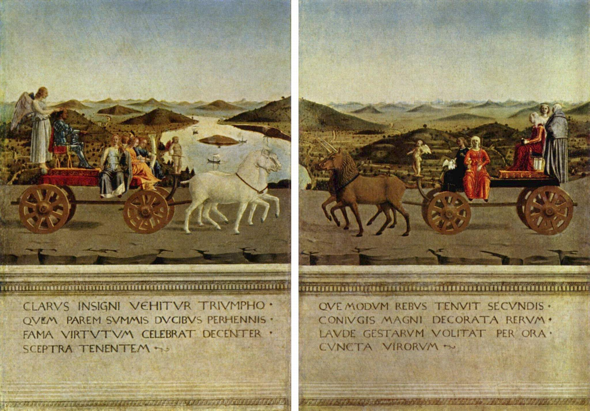

Derrière les portraits, le triomphe des vertus

Au revers, Federico et Battista défilent sur des chars à l’antique, accompagnés de figures personnifiant les Vertus. Les inscriptions latines célèbrent leurs qualités : ces images construisent aussi leur gloire et leur mémoire.